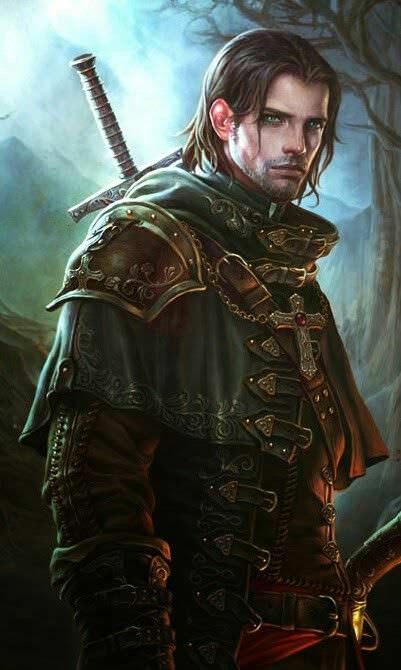
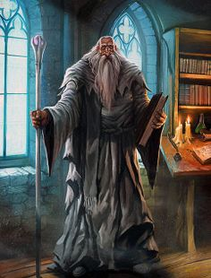
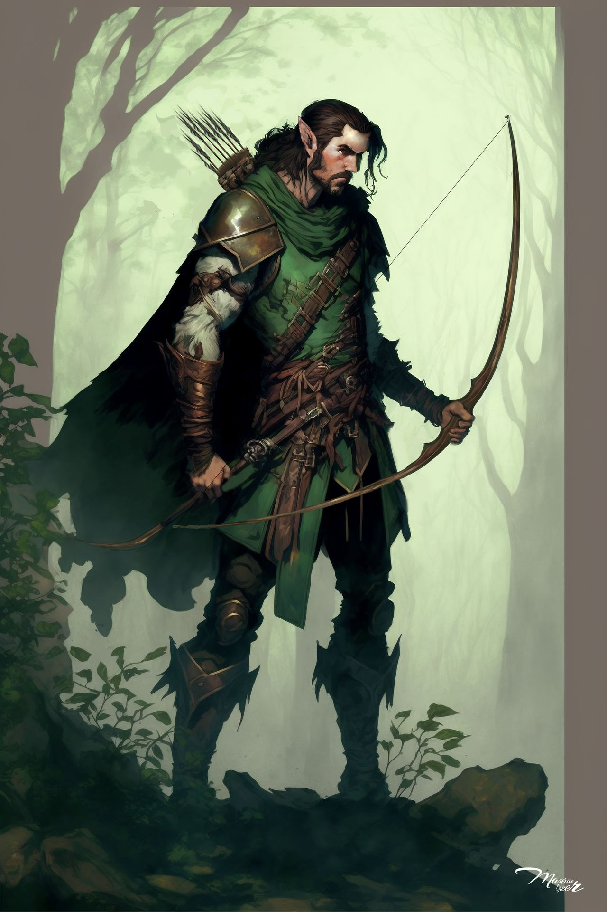
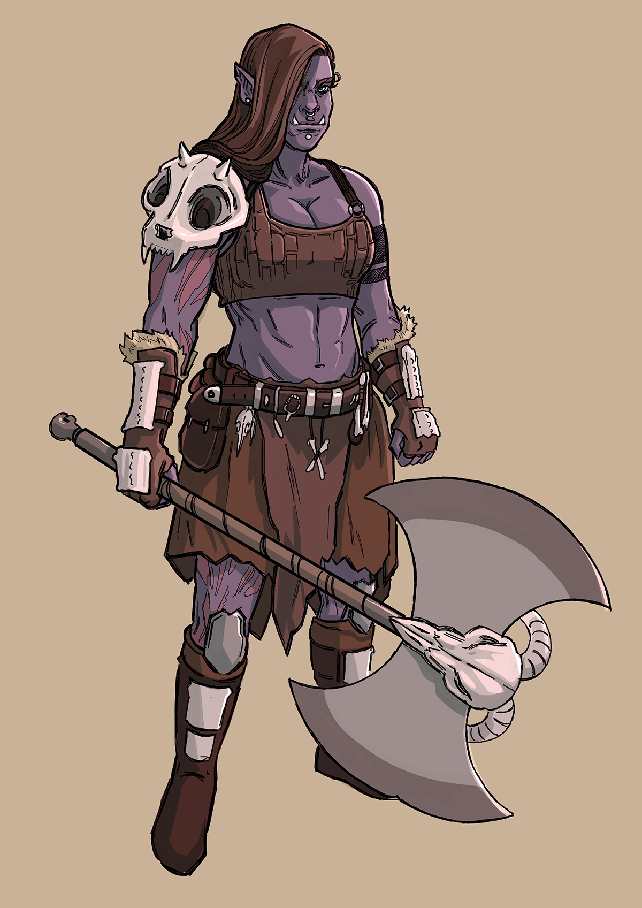
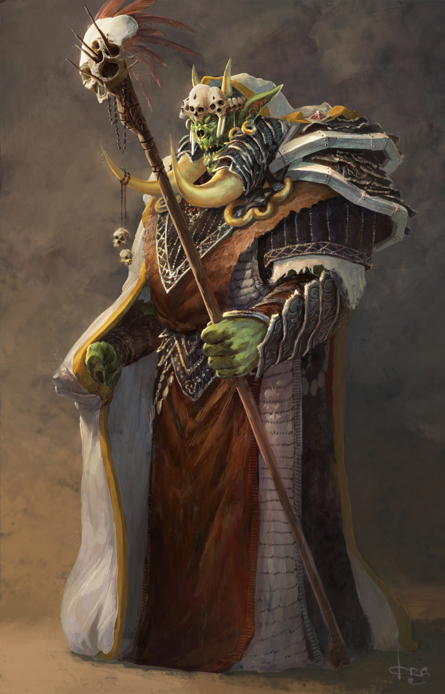

Character Creator

Fighter
Fighters share an unparalleled mastery with weapons and armor, and a thorough knowledge of the skills of combat. They are well acquainted with death, both meting it out and staring it defiantly in the face.

Wizard
Wizards are supreme magic-users, defined and united as a class by the spells they cast. Drawing on the subtle weave of magic that permeates the cosmos, wizards cast spells of explosive fire, arcing lightning, subtle deception, brute-force mind control, and much more.

Ranger
Far from the bustle of cities and towns, past the hedges that shelter the most distant farms from the terrors of the wild, amid the dense-packed trees of trackless forests and across wide and empty plains, rangers keep their unending watch.

Druid
Whether calling on the elemental forces of nature or emulating the creatures of the animal world, druids are an embodiment of nature's resilience, cunning, and fury. They claim no mastery over nature, but see themselves as extensions of nature's indomitable will.

Barbarian
For some, their rage springs from a communion with fierce animal spirits. Others draw from a roiling reservoir of anger at a world full of pain. For every barbarian, rage is a power that fuels not just a battle frenzy but also uncanny reflexes, resilience, and feats of strength.

Shaman
Shamans connect with the dead ancestors and the unborn children who dwell amongst us, through meditation, rituals and study. In this way they connect with the world around them, attracting spirits, which they form bonds with to gain power and knowledge of the past and future of the land and its peoples.